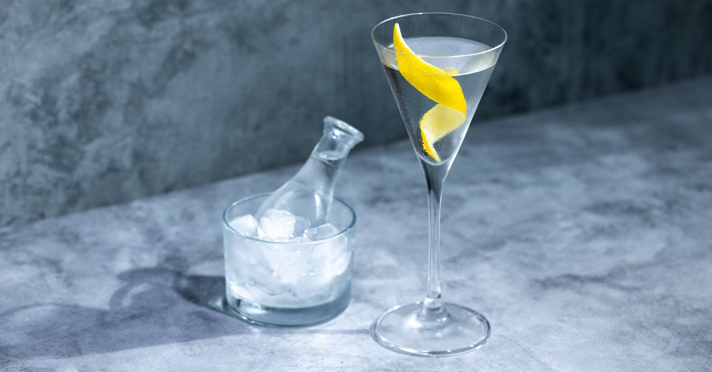
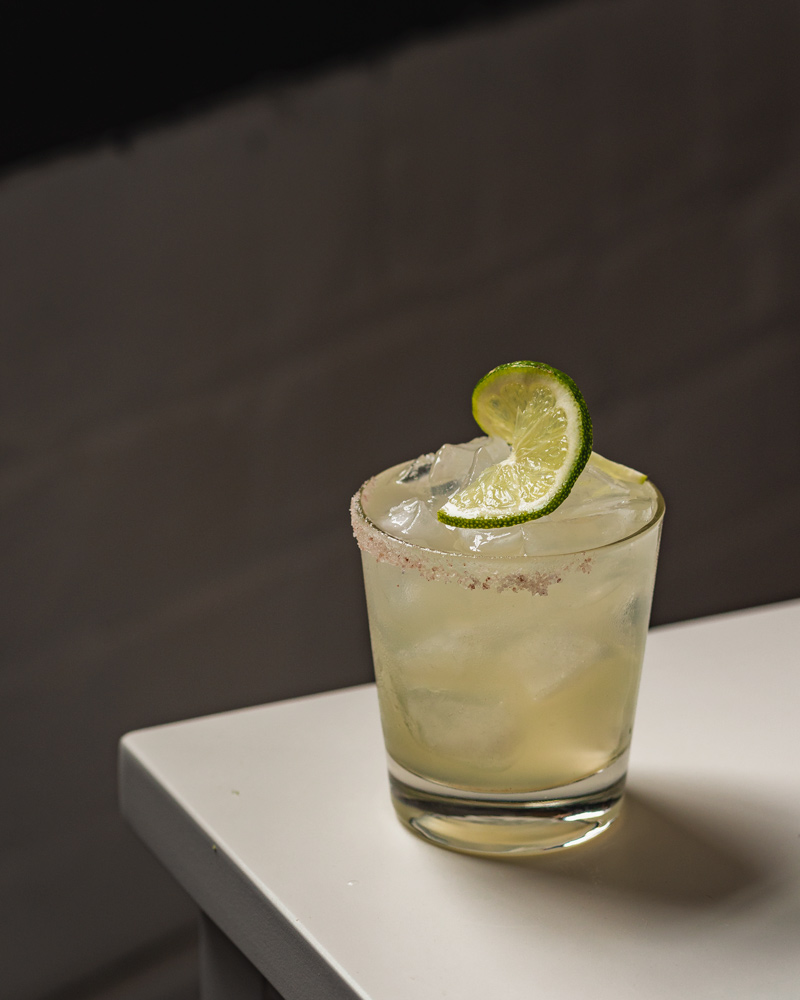
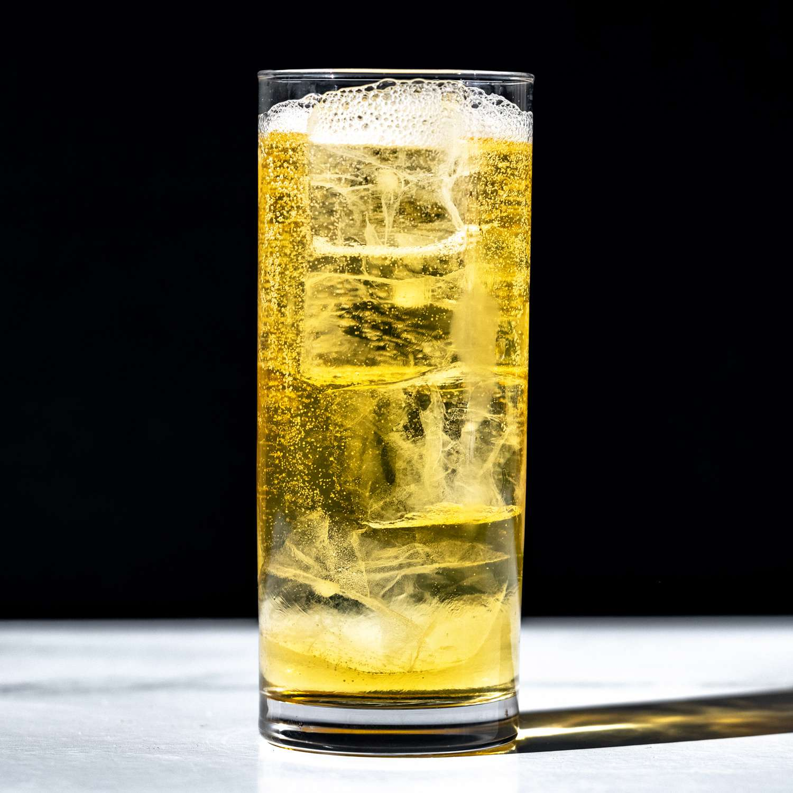
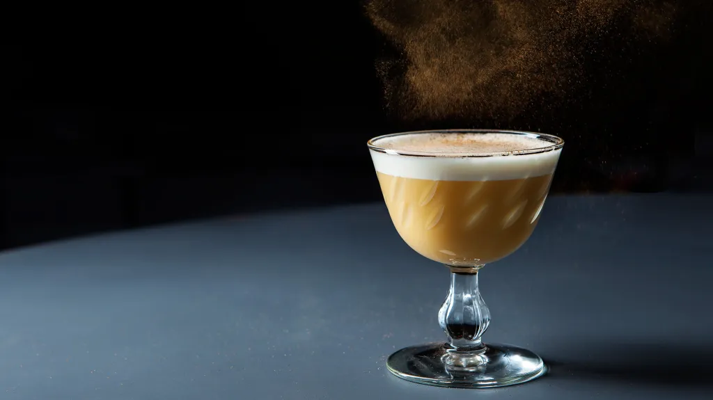

The Old Fashioned
The old fashioned is at its root, the simplest cocktail. The cocktail is strong and spirit forward. The purpose is to highlight the base spirit (usually whiskey) and balance it with a little bit of sweetness and some added "seasoning". A base recipe is as follows;
2.0oz Bourbon
0.25oz Simple Syrup
3-4 Dashes Aromatic Bitters
Combine Ingredients/stir/pour over ice/garnish with an orange twist

The Martini
The martini is adding aromatized/fortified wine to a base spirit and "seasoned" with bitters. At their core, a martini and a manhattan are very similar drinks. The big differences are what ingredients are used. A base recipe for a martini is as follow;
2.25oz Gin
0.75oz Dry Vermouth
2 Dashes Orange bitters
Combine ingredients/stir/strain into a coupe/garnish with a lemon twist
The Sour Family
A Sour is the additon of citrus to a cocktail. It is a base spirit, citrus, and sweetness in the form of sugar (typically a syrup or nectar). Here we incorporate shaking as a way to airrate and add texture to a drink. A classic daiquiri is a great example of a sour. A base sour recipe is as follows;
2.0oz White Rum
1.0oz Fresh lime juice
0.75oz Simple Syrup
Combine ingredients/shake/double strain in a coupe/garnish with a lime wedge

The Daisy Family
A Daisy is a drink where sweet liquers are used in place of sugar and syrups in a sour. Some common daisys are the sidecar, a lemondrop, and most famous of all-the margarita. Margarita literally translates to daisy. A margarita recipe is as follows;
2.0oz blanco tequila
1.0oz Fresh lime juice
1.0oz Triple sec Orange liqueur
Combine ingredients/shake/strain over ice/garnish with a lime wedge
The Highball
A highball is the most common drink consumed at home. At its absolute core it is a base spriit and a mixer. Usually in a ration of 1 part base spirit to 2-3 parts mixer. A screwdriver, jack and coke, and a bloody mary are all examples of a highball. Here is a recipe for a whiskey soda;
2.0oz Whiskey of choice
4.0oz Cold sparkling water
build cocktail over ice/garnish with a citrus wedge
The Flip Family
A flip is a drink that includes some sort of richness or fat. It can have varying degress of citrus, although the amount is typically on the lower end. It is "seasoned" with spice and bitters and balanced with sweetness. eggnogs, flips, and alexanders are examples of flips. Here's a recipe for a sherry flip;
2.0oz Oloroso sherry
0.5oz simple syrup
1 whole egg Combine ingredients/dry shake/wet shake/double strain in a coupe/garnish with grated nutmeg
How to make a cocktail
Lots of technique goes into making cocktails. Here is a great video explaining how to properly shake and stir cocktails